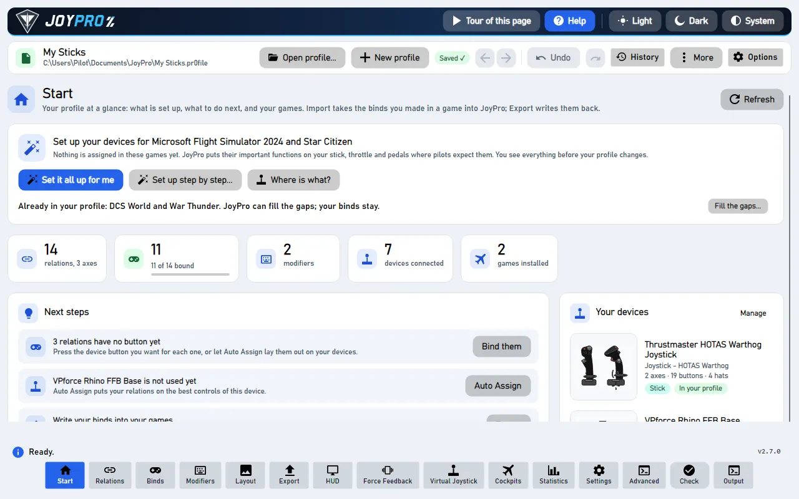

G-Rebels — кіберпанкова гра про повітряні бої на Unreal Engine 5: ви літаєте на VTOL над мегаполісами. Гра ставить кожен увімкнений вами joystick на канал (від 0 до 5) і зберігає роль кожної осі (тангаж, крен, рискання, тяга, бічне зміщення, вгору / вниз) та прив'язки кнопок для кожного каналу у двох файлах збережень. JoyPro читає ці ролі й прив'язки у ваш профіль і записує їх назад; клавіатура, геймпад і миша залишаються такими, як їх налаштовано в грі.
G-Rebels напряму (власні файли прив'язок)
- Підтримка
- напряму (власні файли прив'язок)
- Команда рушія
engine grebels- Файл прив'язок
%LOCALAPPDATA%\G_Rebels\Saved\SaveGames\SaveOptions.sav(GVAS, ролі осей змінюються на місці) +EnhancedInputUserSettings.sav(кнопки)- Входи, які читає гра
- читає 96 кнопок, 24 осі, без хетів на joystick (задокументовано)
- Список команд з
- власна таблиця JoyPro (ролі осей, кнопки)
- Внутрішньоігровий тест
- 18/18 кроків пройдено (2026-10-11)
- ✓ Імпорт
- ✓ Експорт
- ✗ Прив'язки клавіатури
- ✗ Модифікатори
- ✓ Список команд, створений на вашому ПК
- ✓ Спостерігач за іграми
- ✗ Криві осей і мертві зониG-Rebels: лише інверсія.
- ✗ Налаштування керування гри
- ✗ Налаштування Force Feedback у грі
- ✗ Force Feedback з телеметрії
- ✗ Запис телеметрії
- ✓ Віртуальний joystick (vJoy)
- ◐ Віртуальний геймпад Xbox
- ✓ Віртуальні функції
- ✓ Майстер налаштування / Auto Assign
- ✗ Кабіни
- ✓ Шпаргалки
- ✓ Внутрішньоігровий тест
З матриці підтримки, створеної з коду рушія: усі ігри.
#Запуск за 3 кроки
- Налаштувати все за мене
на сторінці «Початок» - Використати ці кнопки
спершу перегляньте список - Записати в мою гру
G-Rebels має бути закрита
До, один раз для кожного пристрою в грі: дайте йому канал у OPTIONS > INPUT > DEVICES. Змініть одну роль осі на його вкладці JST. Прив'яжіть одну кнопку. (Подробиці нижче.)
Потім: ваші прив'язки видно на вкладці JST пристрою.
Ви вже прив'язували кнопки в G-Rebels? Тоді сторінка «Початок» запропонує Імпортувати, потім заповнити прогалини. Ваші прив'язки залишаться, а нові завдання отримають лише вільні кнопки. Див. Швидкий старт: як змусити ручку працювати.
#Що JoyPro робить для G-Rebels
- Імпорт: ролі осей кожного каналу (яка вісь ручки є тангажем, креном, рисканням, тягою, бічним зміщенням, вгору / вниз) з інверсією, а також відомі JoyPro прив'язки кнопок потрапляють у ваш профіль на ваші справжні пристрої.
- Зв'язки: «Pitch» у G-Rebels може бути тим самим зв'язком, що й тангаж у ваших інших іграх.
- Експорт: JoyPro встановлює ролі осей і прив'язки кнопок на каналах ваших пристроїв. Він ніколи не додає канал чи пристрій: цю частину ви робите один раз у грі.
#Імпорт ваших прив'язок G-Rebels
- Відкрийте Початок. Якщо картка G-Rebels просить список команд, натисніть Створити список: JoyPro записує власну таблицю ролей осей і кнопок гри.
- Натисніть Імпорт на картці G-Rebels, залиште Додати до мого профілю (рекомендовано) і натисніть Імпортувати зараз.
- Показати мої зв'язки відкриває те, що надійшло.



#Створення й перевірка зв'язків
Прив'яжіть свої зв'язки до дій G-Rebels на сторінці Зв'язки (див. процес зв'язків), потім запустіть Перевірити на сторінці «Експорт». G-Rebels дозволяє одну роль на вісь і одну кнопку на дію й канал; перевірка показує, де два зв'язки хочуть той самий вхід.
#Експорт у G-Rebels
- Закрийте G-Rebels. JoyPro відмовляється записувати, поки гра працює.
- Відкрийте Експорт і позначте картку G-Rebels.
- Залиште Замінити на моїх пристроях разом з Очистити й інші мої пристрої, якщо ви налаштовуєте свої ручки в JoyPro. Натисніть Експортувати зараз на картці.


Відкрийте OPTIONS > INPUT > CONTROLS і вкладку JST<channel> вашого пристрою (JST0 для каналу 0). У розділі AXIS кожна вісь joystick (X, Y, Z, RX, RY, RZ, Slider, Dial) показує роль, яку встановив JoyPro (YAW, THRUST, ROLL, PITCH, SIDE STRAFE, UP / DOWN або NONE). У розділі BUTTONS прив'язана дія показує вашу кнопку, наприклад «Enhanced Raw Input Controller 0 Button 5».
#Що ви робите самі в G-Rebels
Зробіть це один раз для кожного пристрою, до першого експорту:
- Увімкніть пристрій: OPTIONS > INPUT > DEVICES перелічує кожен joystick з позначкою DEACTIVATED. Дайте кожному потрібному пристрою канал (0 - CHANNEL ... 5 - CHANNEL). Пристрій без каналу експорт пропускає з повідомленням «увімкніть його в OPTIONS > INPUT > DEVICES».
- Змініть одну роль осі на вкладці JST пристрою. Лише тоді гра зберігає рядки осей цього каналу; JoyPro змінює їх на місці й ніколи їх не додає. Саме лише відкриття вкладки нічого не зберігає.
- Прив'яжіть одну кнопку в грі один раз. Файл кнопок з'являється з першою прив'язкою.
#Типові помилки
- Роль осі не записується: канал ще не має збережених рядків осей. Змініть одну роль осі на його вкладці JST у грі, закрийте гру, експортуйте знову.
- Бракує прив'язки кнопки: з кнопок гри поки підтверджено лише Primary Fire; інші дії з'являться, коли стануть відомі їхні назви.
- Кілька пристроїв raw input мають спільні клавіші: поставте весь HOTAS на один пристрій за допомогою Віртуальний joystick; тоді йому потрібен лише один канал.
#Файли, які JoyPro читає й записує
| Файл | Що це |
|---|---|
%LOCALAPPDATA%\G_Rebels\Saved\SaveGames\SaveOptions.sav |
пристрої з їхніми каналами (за шляхом HID) і по одному рядку осі на кожну вісь кожного каналу: роль, інверсія, мертва зона, множник |
%LOCALAPPDATA%\G_Rebels\Saved\SaveGames\EnhancedInputUserSettings.sav |
прив'язки кнопок, одне зіставлення на дію й канал |
...\SaveOptions.sav.joypro-meta.json |
дані JoyPro про експортовані прив'язки (назви, групи), які зчитує наступний імпорт |
Для обох файлів збереження перед першим записом робиться резервна копія (.jpbak поруч із ними й у сховищі резервних копій JoyPro).
#Режими експорту в G-Rebels
Одна роль на вісь і одна клавіша на дію й канал. Ті самі правила діють для ролей осей і кнопок.
| Режим | Що відбувається |
|---|---|
| Лише додати | Роль ставиться лише на вісь без ролі; вісь з іншою роллю пропускається й позначається «Не записано в гру». |
| Оновити, зберегти прив'язки гри | Роль із профілю ставиться на свою вісь (роль, що там була, прибирається); на інших осях роль залишається. Кнопка: зіставлення іншої дії на цій клавіші прибирається. |
| Оновити, мій профіль головніший | Як вище, і інші осі цієї ролі на підключених каналах отримують NONE. |
| Замінити на моїх пристроях | Кожна інша роль записаного каналу стає NONE. |
| + Очистити й інші мої пристрої | Те саме на ввімкнених підключених каналах, у які JoyPro не записує. |
#Що ніколи не змінюється
- Клавіатура, геймпад, миша й інші параметри гри.
- Канал, пристрій якого не підключено, зберігає свої ролі.
- Пристрої, ігноровані під час імпорту, і пристрій vJoy, у який передає JoyPro.
- Список пристроїв гри: JoyPro ніколи не вмикає й не вимикає пристрій і ніколи не додає канал.
#Осі та інші налаштування
- Глобально: один набір прив'язок на канал, без профілів літаків.
- Інвертувати записується разом із роллю. Хети (рядки POV), мертва зона й чутливість поки не записуються.
- Немає налаштувань для всієї гри, немає Force Feedback.
- Спостерігач: роль або прив'язку, яку ви змінили в грі, помічено після її закриття (спостерігач).
- HUD: поки працює G-Rebels, HUD називає дію кожної натиснутої кнопки.
- Гра читає до 96 кнопок і 24 осей на пристрій, без хетів.
#Усередині інтеграції G-Rebels
flowchart LR D["G-Rebels: DEVICES<br/>пристрій на каналі 0-5"] --> S P["Ваш профіль<br/>(зв'язки + прив'язки)"] --> E["engine grebels export"] E --> S["SaveOptions.sav<br/>ролі осей + інверсія<br/>для кожного каналу"] E --> B["EnhancedInputUserSettings.sav<br/>прив'язки кнопок для кожного каналу"] S --> G["G-Rebels: CONTROLS ><br/>вкладка JST каналу"] B --> G
Код: engine\Games\GRebelsIntegration.cs, engine\Games\GRebelsSaveOptions.cs, engine\Games\GvasKeyMappings.cs.
- SaveOptions.sav: Unreal GVAS (UE 5.8, теги властивостей із деревами типів).
JoysticksміститьS_Controller_Save { DeviceID (HID path), Enabled, MultiID (channel) };AxisOptionsміститьS_Input_Axis_Save { Key, Offset, Multiplier, Role, Inverted, DeadZone }з ключами на зразокRawInput_Controller0_AxisYі роллю як enum (0 Yaw, 1 Thrust, 2 Roll, 3 Pitch, 4 Side strafe, 5 Up/down, 6 None). Контрольної суми немає: JoyPro редагує значення фіксованого розміру на місці. - EnhancedInputUserSettings.sav: клавіші Unreal Enhanced Input, призначені гравцем. Назви зіставлень —
<ACTION>JST<channel>(PRIMARYFIREJST0), клавіші —RawInput_Controller<channel>_Button<n>, де n — номер кнопки DirectInput. Список зіставлень переписується; кожен інший байт залишається. - Пристрої: зіставляються за шляхом HID з каналом, який їм дала гра.
- Список команд: власна таблиця JoyPro (
DB\GRebels\actions.tsv, ролі осей і кнопки; файли гри не читаються).engine grebels refresh-dbзаписує її в папку даних гри; рядки, які там уже є, зберігають свій запис. - Команди:
engine grebels paths,engine grebels catalog,engine grebels scan,engine grebels import,engine grebels export--mode clean|add|merge|merge-overwrite --nuke-untouched-devices --dry-run.
#Відомі обмеження
- Хети, мертва зона й чутливість не записуються.
- З кнопок у грі підтверджено лише Primary Fire.
- Записи ніколи не додаються: канали, рядки осей і файл кнопок мають уже існувати в грі.
- Тести:
engine\tests\smoke\grebels.ps1; у гріtools\e2e\games\GRebelsSettings.ps1(два запуски: перший дає vJoy канал і зберігає рядки осей, другий перевіряє випадкові ролі й Primary Fire на JST0; папку збережень потім відновлено).
Усі технічні примітки до цієї гри (створено з репозиторію): g-rebels.md.